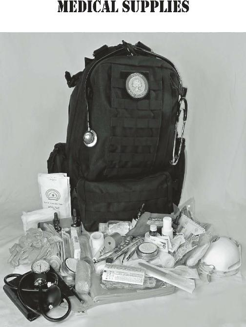

Don’t ignore online sources of information. Take advantage of websites with quality medical information;
there are thousands of them. By printing out information you believe will be helpful to your specific situation, you will have a unique store of knowledge that fits your particular needs. I recommend printing this information out because you never know; one day, the internet may not be as accessible as it is today.
The viral video phenomenon, at sites like YouTube, has thousands of medically oriented films on just about every topic. They range from suturing wounds to setting a fractured bone to extracting a damaged tooth. You will have the benefit of seeing things done in real time. To me, this is always better than just looking at pictures.
The number of medical resources is almost endless;
take advantage of them. I have compiled a list of reference books and useful videos at the back of this book. Review them and consider adding them to your library.
How Do You Obtain Medical Training?
There are various ways to get practical training. Almost every municipality gives you access to various courses that would help you function as an effective healthcare provider.
EMT (Emergency Medical Technician) Basic: This is the standard for providing emergency care. The courses are set out by the U.S. Department of Transportation, and are offered by many community colleges. The course length is usually several hundred hours.
I know that this represents a significant commitment of time and effort, but it is the complete package short of going to medical or nursing school for four years.
You will receive an overview of anatomy and physiology, and an introduction to the basics of looking after sick or injured patients.
These programs are based around delivering the patient to a hospital as an end result. As medical facilities may not be accessible in the aftermath of a disaster, these classes may not be perfect for a long-term survival situation; nevertheless. you will still learn a lot of useful information and I highly recommend them.
It should be noted that there are different levels of
Emergency Medical Technician. EMT-Basic is the primary course of study, but you can continue your studies and become a Paramedic. Paramedics are taught more advanced procedures, such as placing airways, using defibrillators, and placing intravenous lines. In remote areas, they might even take on the roles of physicians and nurses to give injections, place casts or stitch up wounds. These skills are highly pertinent during a disaster.
Most of us will not have the time and resources to commit to such an intensive course of training. For most of us, a Red Cross First Responder or CERT
(Community Emergency Response Team) course is the ticket. These programs cover a lot of the same subjects
(albeit in much less detail) and would certainly represent a good start on your way to getting trained. The usual course length is 40-80 hours. A number of community outreach groups also offer the course.
Of course, the American Heart Association and others provide standard
CPR
(cardio-pulmonary resuscitation) courses and everyone should take these, whether or not they will have medical responsibility in times of trouble.
There are a number of “specialty” courses provided by private enterprises which might be helpful.
Wilderness EMT/Tactical EMT courses are programs meant to teach medical care in a potentially hostile environment. Sometimes, they have a prerequisite of at least EMT-Basic.
There are many wilderness “schools” out there, however, that will offer some practical training to nonmedical professionals that might be useful in difficult times. At the very least, they are cognizant that such a scenario could exist and that your goal of transporting the patient to modern medical facilities might not be a valid option. It pays to research the schools that provide this training, as the quality of the learning experience probably varies.
It is important to tailor your education and training to the probable medical issues you will have to treat. In an austere or post-collapse setting, it might be difficult to predict what these might be. Therefore, it’s helpful to examine the statistics of those who provide medical care in underdeveloped areas. With this information, you will be able to determine what medical supplies will be needed and prepare yourself for the probable emergencies you’ll face.
Looking at one healthcare provider ’s experience over an extended time in a remote area is a good way to identify likely medical issues for the collapse medic. It wouldn’t be unusual to see the following:
Trauma
Minor Musculoskeletal injuries (sprains and strains)
Minor trauma (cuts, scrapes)
Major traumatic injury (fractures, occasional knife and/or gunshot wounds)
Burn injuries (all degrees)
Infection
Respiratory infections (pneumonia, bronchitis, influenza, common colds)
Diarrheal disease (sometimes in epidemic proportions)
Infected wounds
Minor infections (for example, urinary infections, “pinkeye”)
Sexually transmitted diseases
Lice, Ticks, Mosquitos and the diseases they carry
Allergic reactions
Minor (bees, bed bugs or other insect bites and stings)
Major (anaphylactic shock)
Dental
Toothaches
Broken or knocked-out teeth
Loss fillings
Loose crowns or other dental work
Womens’ Issues
Pregnancy
Miscarriage
Birth control
A short aside here: If you have purchased this volume, you probably have done some research into collapse scenarios which could lead to society unraveling. You have probably been given a great deal of advice as to what to do in this situation or that, but you have never been given this advice:
If you want to be fruitful, don’t multiply; at least in the early going of a major collapse.
It should be clear that you are going to need all of your personnel at 110% efficiency. Anyone who has been pregnant knows that there may be a “glow”
associated with it, but you sure aren’t at peak performance. Even those who are well-prepared for just about any disaster often forget that pregnancies happen, and don’t plan ahead for them. When a member of your family or group is unexpectedly with child, you may find it difficult to be mobile when you need to be. As well, your manpower supply, especially in a small family, has taken a big hit.
Pregnancy is relatively safe these days, but there was a time in the not too distant past where the announcement of a pregnancy was met as much with concern as joy. Complications such as miscarriage, postpartum bleeding and infection took their toll on women, and you must seriously plan to prevent pregnancy, at least until things stabilize. Condoms are fine, but will become brittle after two or three years.
Consider taking the time to learn about natural methods of birth control, such as the Natural Family
Planning method. This is a simple method that predicts ovulation by taking body temperatures, and is relatively effective. A discussion of this method and other options will take place later in this book.
Don’t misunderstand me: I am not saying that you should not rebuild our society and follow your personal or religious beliefs. I just want you to understand that your burden, in a collapse, will be heavier if you don’t plan for every possibility.

A very reasonable question for an aspiring medic to ask is “What exactly will I be expected to know?” The answer is: As much as you’re willing to learn! Using the previous list of likely medical issues will give you a good idea what skills you’ll need. You can expect to deal with lots of ankle sprains, colds, cuts, rashes, and other common medical issues that affect you today. The difference will be that you will need to know how to deal with more significant problems, such as a leg fracture or other traumatic injury. You’ll also need to know what medical supplies will be required and how to follow your patient’s status until they are fully recovered. Here are the skills that an effective medic will have learned in advance of a long-term survival situation:
Learned how to take vital signs, such as pulses, respiration rates and blood pressures.
Learned how to place wraps and bandages on injuries
Learned how to clean an open wound
Learned how to treat varying degrees of burns
Learned the indications for use of different medications, essential oils and alternative therapies. As well, know the dosages, frequency of administration, and side effects of those substances. You can’t do this on your own; you’ll need resources such as the
Physician’s Desk Reference. This is a weighty volume that comes out yearly and has all the information you’ll need to use both prescription and non-prescription drugs. Also consider purchasing a good book on home remedies and alternative therapies as well.
Learned how to perform a normal delivery of a baby and placenta.
Learned how to splint, pad and wrap a sprain, dislocation, or fracture.
Learned how to identify bacterial infectious diseases (such as Strep throat, etc.)
Learned how to identify viral infectious diseases (such as influenza, etc.)
Learned how to identify parasitic/protozoal infectious diseases (such as Giardia, etc.)
Learned how to identify and treat head, pubic, body lice, and ticks
Learned how to identify venomous snakes and treat the effects of their bites
Learned how to identify and treat various causes of abdominal, pelvic and chest pain
Learned how to treat allergic reactions and anaphylactic shock
Learned how to identify and treat sexually transmitted diseases
Learned how to evaluate and treat dental disease (replace fillings, treat abscesses and perform extractions)
Learned how to identify and treat skin disease and rashes
Learned how to care for the bedridden patient
(treating bedsores, transport considerations)
Learned basic hygiene, nutrition and sanitary practices (this couldn’t be more important)
Learned how to counsel the depressed or anxious patient (you will see a lot of this in times of trouble)
Learned how to insert an IV (EMT classes teach this),
Learned how to place sutures in a wound.
Actually, more important that knowing how to suture is knowing WHEN to suture. Most wounds that will occur in a power down situation will be dirty wounds, and closing such an injury will lead to bacteria being locked into the tissues, causing infection. See our discussion on this topic later in this book.
Perhaps the most important skill to obtain is how to prevent injuries and illnesses. You will spend much of your time observing simple things, such as whether your people are appropriately dressed for the weather. You will be required to enforce the use of hand and eye protection during work sessions. Learn to recognize situations that place your family at risk, and you will avoid many of the problems that can crop up.
I know, this is a lot to absorb, but don’t feel that learning this information is impossible, or that you can’t be of benefit if you only learn some of the above. The important thing to do is to learn at least enough to treat some of the more common medical issues. Once you’ve learned the basics, you’ll be able to take care of 90% of the problems that are brought before you in times of trouble. After that, any additional information you learn will just make you even more effective as a medical resource. Knowledge gives you power: The power to keep everyone as healthy as possible.

For anyone to do their job properly, they’ll need the right equipment. Imagine a carpenter having to use a steak knife as a saw, or a hunter using a pea shooter instead of a rifle. The same goes for the medic. The successful healthcare provider has spent a lot of time and energy
(and some money) on accumulating a good amount and variety of medical supplies. The more the better, since you don’t know how long you might have to function without access to modern medical care.
It’s important to note that the value of many medical supplies depends largely on the knowledge and skill that the user has obtained through study and practice.
A blood pressure cuff isn’t very useful to someone who doesn’t know how to take a blood pressure.
Concentrate on first obtaining items that you can use effectively, and then purchase more advanced equipment as your skills multiply.
Don’t forget that many items can be improvised; a bandanna may serve as a triangular bandage, an ironing board as a stretcher or thin fishing line and a sewing needle might be useful as suturing equipment. A careful inspection of your own home would probably turn up things that can be adapted to medical use. Look with a creative eye and you’ll be surprised at the medical issues you are already equipped to deal with.
Sterile Vs. Clean
A significant factor in the quality of medical care given in a survival situation is the level of cleanliness of the equipment used. You may have heard of the terms
“sterile” and “clean”, but do you have more than a vague idea of what they mean?
When it comes to medical protection, “sterility”
means the complete absence of microbes. Sterile technique involves hand washing with special solutions and the use of sterile instruments, towels, and dressings.
When used on a patient, the area immediately around these items is referred to as a “sterile field”. The sterile field is isolated and closely guarded to prevent contact with anything that could allow microorganisms to invade it.
To guarantee the elimination of all organisms, a type of pressure cooker called an “autoclave” is used for instruments, towels, and other items that could come in contact with the patient. All hospitals, clinics, and medical offices clean their equipment with this device.
Having a pressure cooker as part of your supplies will allow your instruments to approach the level of sterility required for, say, minor surgical procedures.
Of course, it may be very difficult to achieve a sterile field if you are in an extremely austere environment. In this case, we may only be able to keep things “clean”. Clean techniques concentrate on prevention by reducing the number of microorganisms that could be transferred from one person to another by medical instruments or other supplies. Meticulous hand washing with soap and hot water is the cornerstone of a clean field.
In most survival settings, this may be as good as it gets, but is that so bad? With regards to wound care, there is very little research that compares clean vs.
sterile technique. In one study, an experiment was conducted in which one group of patients had their wounds was cleaned with sterile saline solution, the other group with tap water. Amazingly, the infection rate was 5.4% in the tap water group as opposed to 10.3% in the sterile saline group. Another study revealed no difference in infection rates in wounds treated in a sterile fashion as opposed to clean technique. Therefore, I usually recommend clean, drinkable water to treat most wounds.
To maintain a clean area, certain chemicals are used called “disinfectants”. Disinfectants are substances that are applied to non-living objects to destroy microbes.
This would include surfaces where you would treat patients or prepare food. Disinfection does not necessarily kill all bugs and, as such, is not as effective as sterilization, which goes through a more extreme process to reach its goal. An example of a disinfectant would be bleach.
Disinfection removes bacteria, viruses, and other bugs and is sometimes considered the same as
“decontamination”. Decontamination, however, may also include the removal of noxious toxins and could pertain to the elimination of chemicals or radiation. The removal of non-living toxins like radiation from a surface would, therefore, be decontamination but not disinfection.
It’s useful to know the difference between a disinfectant, an “antibiotic”, and an “antiseptic”. While disinfectants kill bacteria and viruses on the surface of non-living tissue, antiseptics kill microbes on living tissue surfaces. Examples of antiseptics include Betadine,
Chlorhexidine (Hibiclens), Iodine, and Benzalkonium
Chloride (BZK).
Antibiotics are able to destroy microorganisms that live inside the human body. These include drugs such as
Amoxicillin, Doxycycline, Metronidazole, and many others. We’ll discuss these in detail later in the book.
Medical Kits
Most commercial first aid kits are fine for the family picnic or a day at the beach, but we will talk about serious medical stockpiles here. There are four levels of medical kits that we will identify. The first kit is a personal carry or individual first aid kit, sometimes called an IFAK. Every member of a group can carry this lightweight kit; it allows, in most cases, treatment of some common medical problems encountered in the wilderness or when traveling.
In some military services, the IFAK or personal carry kit is useful to the medic as a source of supply. If a squad member is injured, the medic will first use items, as needed, from the wounded soldier ’s kit. This is a resource multiplier and allows the corpsman to carry more advanced medical equipment in their pack.
The second kit listed below is the “nuclear family bag”: This kit is mobile, with the items fitting in a standard large backpack, and will suffice as a medical
“bug-out” bag for a couple and their children. It is, in my opinion, the minimum amount of equipment that a head of household would need to handle common emergencies in a long-term survival situation.
The third kit is a “medic at camp” kit, one that the person responsible as medical resource for the group would be expected to maintain in an expedition camp.
The fourth kit is the “community clinic”, or everything that a skillful medic will have stockpiled for long term care of his/her survival family or group.
Don’t feel intimidated by the sheer volume of supplies in the clinic version; it would be enough to serve as a reasonably well-equipped field hospital. Few of us have the resources or skills to purchase and effectively use every single item. If you can put together a good nuclear family bag, you will have accomplished quite a bit.
IFAK or Personal Carry Kit